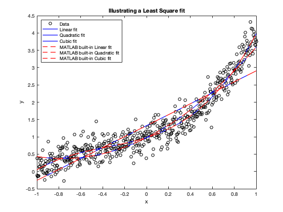
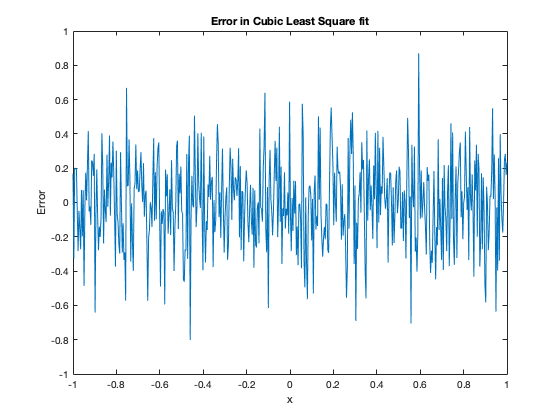

Contents
Introduction
clc
clearvars
close all
Problem 1
load('test_lsq.mat');
n=length(x);
figure(1);
plot(x,ynoisy,'ko');
xlabel('x');
ylabel('y');
title('Illustrating a Least Square fit')
hold on;
for N=1:3
for i=1:N+1
M(:,i)=x.^(i-1);
end
a=flipud(inv((M')*M)*(M')*ynoisy);
y=polyval(a,x);
df=length(a);
v=n-df;
error(:,N)=(y-ynoisy);
residual(N)=sum(error,'all');
Chi_sq(N)=(1/v)*sum(((ynoisy-y).^(2)/(sigmay).^2),'all');
figure(1)
hold on
plot(x,y,'b', 'LineWidth',1.2);
end
for N=1:3
f=polyfit(x,ynoisy,N);
F=polyval(f,x);
Merror(:,N)=F-ynoisy;
Mresidual(N)=sum(Merror(:,N),'all');
figure(1)
hold on
plot(x,F,'r--','LineWidth',1.2)
end
legend('Data','Linear fit','Quadratic fit','Cubic fit',...
'MATLAB built-in Linear fit', 'MATLAB built-in Quadratic fit',...
'MATLAB built-in Cubic fit','Location','northwest');
figure(2)
plot(x,error(:,3));
xlabel('x');
ylabel('Error');
title('Error in Cubic Least Square fit')
disp('Problem 1-b)');
disp([' Residual: ', num2str(residual)]);
disp(['MATLAB built-in Residual: ', num2str(Mresidual)]);
fprintf('\nProblem 1-c)\n');
disp('Reduced Chi^2');
disp(['Linear fit : ', num2str(Chi_sq(1))]);
disp(['Quadratic fit: ', num2str(Chi_sq(2))]);
disp(['Cubic fit : ', num2str(Chi_sq(3))]);
fprintf('\nProblem 1-d)\n');
fprintf('Since the cubic fit has the closest reduced Chi^2 value to 1 and because its error \n seem to mostly depict noise about zero, it appears to be the best fit')
Problem 1-b)
Residual: -5.409e-13 -6.1862e-13 -7.5806e-13
MATLAB built-in Residual: -1.7497e-13 -6.8834e-14 7.0166e-14
Problem 1-c)
Reduced Chi^2
Linear fit : 2.9125
Quadratic fit: 1.3754
Cubic fit : 1.0285
Problem 1-d)
Since the cubic fit has the closest reduced Chi^2 value to 1 and because its error
seem to mostly depict noise about zero, it appears to be the best fit 
Problem 2
load('test_interp.mat')
x=[-0.83,-0.2,0.4, 0.9, 1.22];
i=InterpIndex1D(xg,x);
y=[-0.92,-0.3,0.2, 0.7, 1.12];
[i2D,j2D]=InterpIndex2D(xg,yg,x,y);
f=f2D(:);
finterpmanualtest=BlInterp(xg,yg,f,x,y);
[X,Y]=meshgrid(xg,yg);
finterpmanual=BlInterp(xg,yg,f,xgi,ygi);
finterp=interp2(X,Y,f2D,xgi,ygi);